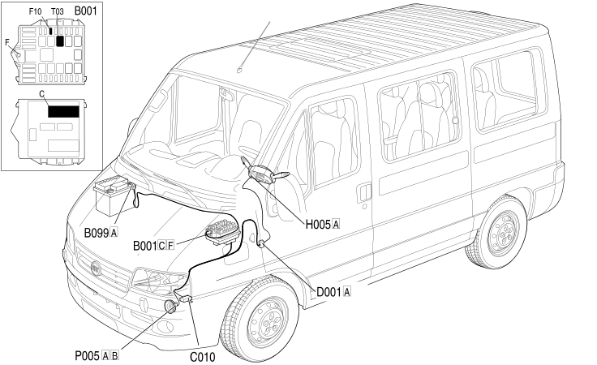

E3010 HORNS LOCATION COMPONENTS
- Path
- Electrical equipment > 1 ELECTRICAL FUNCTIONS > E30 ELECTRICALLY ACTIVATED DEVICES > E3010 HORNS > E3010 HORNS LOCATION COMPONENTS
- Kind
- topic
- Applies to
- all engines; all production periods
- Interactive page
- https://sloeber94.github.io/elrnDB-fDct/en/#/244001723
Applies to: all engines; all production periods
Location Components
